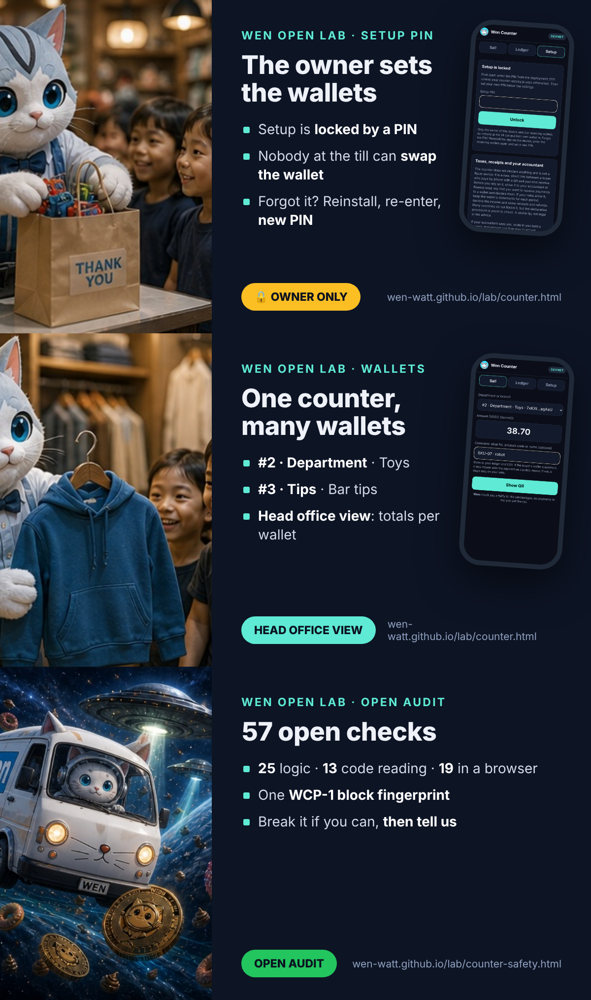

Stage 7: Wen Counterprototype · devnet
- 0 · Roadmap
- 1 · Receipts & warranty
- 2 · Creator royalties
- 3 · B2B invoices
- 4 · Payments bridge
- 5 · Simulator
- 6 · Devnet: repeat it
- 7 · Counter
- 7.1 · Safety
- ✓ · Trust chain
- ★ · Benefits & use
- ✎ · Ten walkthroughs
- ▶ · Videos
- ? · Reader findings
In short · free for everyone
Hey, where are you going? 🐾
US merchants paid $187.2 billion in card fees in 2024. On a 3-dollar coffee, a card can take 12.9%. Here the counter costs 0, there is no fee per sale, and the buyer’s wallet pays only the Solana network fee: 5,000 lamports.
No app to publish, no terminal to rent, no card data to protect, nobody in the middle. A web page on the phone at your till. Take it, check it, run it.
freeopen codeno app storeno card datano intermediariessavings measured, not promised
Open the counter → Download the kit (.zip)
A cat came in from somewhere far,
with nothing up his sleeve.
He brought a till that costs you zero
and fees you can believe.
He wants no cut, no card, no app:
just pet him, and receive.


Cards to share. Screens are from a test run on devnet; the QR on the cards is blurred on purpose.
Why this matters
Every layer between a buyer and a shop takes its share: the acquirer, the network, the terminal rental, the platform. For a shop that pays its taxes and its people, that is money taken from work, before any decision about growth. Wen Counter is a direct micro-system: the buyer pays the shop, the chain confirms it, and the shop keeps the record. The only cost of a sale is the Solana network fee, and the buyer’s wallet pays it. The counter itself costs nothing.
For a business that keeps books: every sale has an on-chain signature and goes into a ledger you can export as CSV for your accountant.
Your own till, in five steps
- Take the tool. Open the counter on the phone or tablet at your till, or download the kit.
- Create a wallet in a Solana wallet app you trust (Jupiter, Phantom, Solflare, Backpack, Squads).
- Register it in Setup: shop name, wallet name, network (devnet first).
- Paste the receiving address. The counter checks it on-chain. That is your open, free till.
- Manage the money in your own wallet: refunds, purchases, transfers, records for your tax return.


A toy shop, a grill, a pizzeria, a clothes shop: the same free till. Read the news.
For companies and chains
| Level | Wallet | Who | When |
|---|---|---|---|
| Department or till | one receiving wallet each, named in Setup (furniture, toys, garden) | the counter takes payments, receive-only | every sale |
| Branch | a till wallet per branch | a responsible manager runs the day’s takings and refunds | during the day |
| Company | one central wallet, for example a Squads multisig | finance; several approvals to move funds | the day’s takings arrive every evening |
One counter, wallets 1 to X, each with a label. At the till the cashier picks where the sale goes; the ledger filters by wallet and the export carries the wallet name and address. The interface stays strict; the code is open for any change you need.

The setup PIN: the owner sets the wallets
A company puts the counter on a phone at the till and sets the receiving wallets. Setup is locked by a PIN, so a manager or a cashier cannot put their own wallet in. The first PIN is a deployment parameter (counter-deploy.js, simple 1111 by default); the owner sets a new one in Setup right after the first start. Leaving Setup locks it again; five wrong tries pause it for 30 seconds; clearing the ledger needs the PIN too. The PIN is kept on the device only as a salted SHA-256.
Forgot the PIN? Reinstall the app on the device, enter the receiving wallets again and set a new PIN. A simple, safe flow: nothing is lost on-chain, and an employee cannot quietly swap the wallet. A reinstall leaves the counter with no wallet at all, the receiving address is shown on every QR, and the takings stop arriving in the company wallet, so a swap cannot go unnoticed.

Voilà: your ready acquiring mechanism. Your own Wen Counter.

What the till does
| Function | How it works | Where the decision stays |
|---|---|---|
| Currencies | Choose in Setup, in this order: USDC, SOL, WEN, JUP; USDT optional; any SPL token by mint. Mainnet-only tokens are greyed out on devnet. Token decimals are read from the chain before a sale. | the shop chooses what it accepts |
| Several wallets | Wallet #1 (main) plus wallets #2..X, each with a type (Department, Branch, Till, Tips, Online, Events, Other) and a name: #2 · Department · Furniture, #4 · Tips · Bar tips. Each is checked on-chain; the payment is verified against the wallet chosen for that sale. | Setup, by the owner |
| Setup PIN | Wallets and settings open only with the PIN; the first PIN comes from the deployment file (default 1111) and the owner changes it. Forgot it: reinstall, enter the wallets, set a new PIN. | the owner of the device |
| Sale comment | What for, a product code or a name, or nothing. Goes to the ledger, the receipt and the CSV. If the buyer’s wallet supports it, it also travels with the payment (Solana Pay message and an on-chain memo, which is public); if not, it stays only on the shop’s side. | the cashier, per sale |
| Head office view | The ledger adds up sales per wallet and token; the CSV carries wallet number, type, name and address. Every wallet can also be read by anyone in a block explorer. | finance, from the wallets |
| Receipt for the buyer | After “Paid” the buyer chooses: a receipt QR (link to the transaction), the receipt text, or a receipt NFT from Stage 1. Not a fiscal receipt: the counter is a simple aggregation tool, not a fiscal device. Follow your country’s receipt rules. | buyer and shop |
| Refunds | Rarer than sales. Made as a new payment from the shop’s wallet; the ↩ button copies refund: plus the original transaction ID for the memo, so anyone can match the two. Larger firms follow their own rules. | inside the wallet app |
| Exports | CSV for today, this week, month, year, last year, a quarter (Q1–Q4) or any period; with wallet name, address, signature and network fee. | your accountant |
| Language | English today. All interface words live in one dictionary file (counter-i18n.js), bound to the core fingerprint, so a translation never changes the core. Chinese and Italian are next. | — |
Seven answers before you scale
These are not open problems. They are the answers we give to every shop, written down once, so that each one can decide for itself.
- Who it is for. Most people do not have a Solana wallet with USDC yet, and no code changes that. Nobody here talks about mass adoption: the first users are crypto communities, events and online shops for their own audience. The solution is open to everyone, in search and in the files AI assistants read; where it is useful, people will use it.
- Several departments, one view. Do you have several departments, or want to split what you receive? Add wallets by number, type and name:
#2 · Department · Furniture,#3 · Branch · Downtown,#4 · Tips · Bar tips. The ledger adds them up per wallet (head office view), and every wallet can be read in a block explorer. - A real company: RPC, wallet side and accounting. Many wallets and many payments need your own RPC endpoint, because public endpoints have rate limits. Prepare the wallet side as well: who holds which wallet, who approves transfers, how the day’s takings move. For a company this means building the wallets into its accounting, which is different from a private seller who receives a payment once a week and reports it alone. Check with your accountant or finance lead that you may use a wallet. It may not be forbidden, but the procedure and the declaration need your attention. This is a useful tip, not advice.
- Fiscal rules. The counter does not declare anything. It is a new mechanism of modern links: the buyer pays by phone with a QR the counter generates, and you receive. Ideal for a micro business, workable for a large one, very economical and free. Study the fiscal procedure with your accountant. If your rules let you declare the amounts, keep the wallet’s statements for each period, declare the income and show what you received and what you refunded. Explain to your accountant that you want to receive funds to a wallet and declare them: it is a correct, modern and transparent approach to business and taxes. If the accountant says yes, scale it: you have an interesting solution in your hands.
- Responsibility and open audit. You use the solution on your own responsibility. We give the mechanism; we do not know what you do with it or what you change. The mechanism itself does not take money, does not hold money and does not charge a fee: there is the network’s procedure, and only that procedure is used; there is your wallet, and you use it yourself. The audit is open: read the code, rerun the 57 checks, and tell us what you find (how).
- Languages, bound to the core. Every interface word is in one dictionary file. The dictionary carries the fingerprint of the core it was written for, and a safety check fails if the core changes without a fresh look at the translations. Chinese and Italian come first.
- USDT stays. Optional, next to USDC, SOL, WEN and JUP.

The Wen cycle, step by step
This is the whole algorithm. Each step is done by you, in tools you control; the counter only joins them together.
- Choose a wallet. Jupiter Wallet, Phantom, Solflare, Backpack, Squads for a team, or another Solana wallet you trust.
- Create it by its own rules. Write the recovery phrase on paper, keep it offline, never type it into a website, never send it to anyone, and never connect the wallet to the counter. Nobody from Wen will ever ask for it.
- Deploy your own counter. Open the hosted counter or download the kit and put it on your own domain with your own design. It is your interface, not ours.
- Make the wallet its identity. Paste the receiving address into Setup and press Check this address on-chain. The address, the wallet name and the time of the check become the identity of your till.
- Take a payment. Type the amount; the counter shows a Solana Pay QR with your address, the amount, a fresh reference and an order memo. The buyer pays from any Solana wallet.
- Let the chain confirm it. The counter reads the chain, checks five things (reference, recipient, token, amount, success) and shows “✓ Paid”. The money is already in your wallet.
- Keep the record, decide in your wallet. The sale goes into your ledger and CSV. Refunds, transfers and withdrawals are your decisions, made inside your wallet app. Voilà.
What you gain: no fee per sale and no counter cost; money final in seconds; no terminal, no app store, no contract; your own design and domain; a ledger with your real savings. What keeps you safe: no keys, no wallet connection, read-only in code, no injected commands, the address shown on every QR, 57 open checks (Stage 7.1).
The foundation: SOL, SDK, WEN, SPL Token, Token-2022
The protocol of the counter is the open cycle these five already form. We rechecked every link on November 11, 2026.
| Link | What it does in the counter | Checked how |
|---|---|---|
| SOL · Solana network | Carries the payment; its fee of 5,000 lamports per signature (half burned, half to the validator) is the only cost of a sale, paid by the buyer’s wallet. | Solana docs source |
| SDK · open libraries and standards | Solana Pay’s public URL format and two standard read calls; the Wen Program Library (Apache-2.0) and its JavaScript SDKs (MIT) for receipts and royalties in other Lab stages. | Public code and docs source |
| WEN · the community token | The story and the cycle of usefulness this counter belongs to; can be accepted as a community payment option. | Read on-chain, slot 468049071 source |
| SPL Token · original program | USDC and WEN live here; transfers have no built-in fee, so the shop receives the full amount. | On-chain owner program Tokenkeg… |
| Token-2022 · extensions | If a shop accepts a Token-2022 token with a transfer fee, the counter compares what actually arrived, so no fee passes unnoticed. | 25 core checks, Lab models 1–6 with 41 tests |
Nothing new is deployed to the chain: no program, no token, no contract. The counter is a way to read what is already public.
Your responsibility
- The counter is free. Nothing is charged, nothing is collected, and there is no intermediary between you and your buyer.
- You run your business, so you are responsible for it: register your activity where required, keep your records, declare your income and pay your taxes according to the rules of your country. Do it in good faith and on your own.
- Converting to cash, stablecoin rules and consumer protection differ by country. Ask an accountant or a lawyer before going live.
- Your wallet’s safety is yours: the recovery phrase, the device, the team approvals.
- You use the solution on your own responsibility. We give the mechanism and do not know how it is used or changed. The mechanism does not take, hold or charge anything; it follows the Solana network’s rules strictly, and your wallet is yours to use.
The numbers behind the idea
- $187.2 billion in card processing fees paid by US merchants in 2024 (Nilson Report); a merchants’ coalition counts $198.25 billion for 2025. source source
- $12.5 trillion of US card purchase volume in 2025. source
- A typical published plan: 2.9% + 30¢ online and 2.6% + 10¢ in person, with an extra platform fee when a shop uses an outside processor. source
- Card terminals cost about $200 to $1,000+ each; tap-to-pay on a phone needs a certified app, NFC and device attestation. source
- Solana Pay is an open standard; a Shopify checkout plugin exists since 2023, and as reported in 2026, development has shifted from point-of-sale tools to other payment primitives. source That gap is what this model fills: it needs no SDK, only the public URL format and two read calls.
The micro-ticket effect
The fixed part of a card fee is the same for a coffee and a sofa, so the smaller the sale, the larger the share it takes. This is where a counter without a fixed fee matters most: pizzerias, florists, cafés, market stalls.
| Ticket | Card, 2.9% + 0.30 | Card, 2.6% + 0.10 | Wen Counter |
|---|---|---|---|
| 3 · coffee | 0.39 (12.9%) | 0.18 (5.9%) | 0 to the shop; the buyer’s wallet pays 5,000 lamports |
| 8 · pizza slice | 0.53 (6.7%) | 0.31 (3.9%) | 0 to the shop; the buyer’s wallet pays 5,000 lamports |
| 25 · bouquet | 1.02 (4.1%) | 0.75 (3.0%) | 0 to the shop; the buyer’s wallet pays 5,000 lamports |
| 60 · dinner for two | 2.04 (3.4%) | 1.66 (2.8%) | 0 to the shop; the buyer’s wallet pays 5,000 lamports |
| 150 · online order | 4.65 (3.1%) | 4.00 (2.7%) | 0 to the shop; the buyer’s wallet pays 5,000 lamports |
Card fees in the shop’s currency, effective rate in brackets. Converting to cash, if the shop does, typically costs 0.5–1.5% source; the counter’s ledger subtracts that from what the shop keeps.
How it fits together
1 · One sale, five steps
Show
QR per sale
A Solana Pay request with amount, token, shop name, an order memo and a fresh reference key.
Pay
Buyer’s wallet
The buyer scans and confirms. The wallet signs and pays the network fee. The counter never sees a key.
Find
By reference
The page asks the chain every two seconds for a transaction that carries this sale’s reference.
Verify & record
Paid ✓
Recipient, token, amount and success are checked; the sale goes into a ledger on the device.
2 · Shops that can take it and extend it
Pizzeria
Order number in the memo
The kitchen screen watches the same reference and starts the oven when it turns green.
Florist
QR on a price tag
A printed QR per bouquet; the phone at the till confirms each sale.
Online shop
Pay link
The same request as a link in checkout; for a server-side webhook, see Stage 4.
Market stall
Any tablet
Installed to the home screen; opens offline and needs the network only to confirm.
Key notes
No card data, no terminal. The page shows a request; the wallet does the signing. That is why a web page is enough.
Measured, not promised. Every number in the ledger comes from a confirmed transaction and the shop’s own card terms.
Stable prices. USDC keeps the price in dollars; SOL and other tokens need the shop’s own rate for the ledger.
Keys stay home. Only the public receiving address is entered. The page cannot move funds.
The savings model of your own shop
Brochures quote one rate. A shop pays a mix: many small tickets, a few large ones. The counter’s ledger computes three numbers from confirmed sales:
- Card fees avoided = Σ (card % × sale value + fixed fee), using the shop’s own terms;
- Kept by the shop = card fees avoided − Σ (off-ramp % × sale value);
- Effective card rate of your mix = card fees avoided ÷ volume, the real rate this shop would pay, shown as a dot on the micro-ticket curve.
Network fees are read from each confirmed transaction and shown in lamports; the buyer’s wallet pays them.
At the top of the ledger the counter says it plainly: “Today you kept …”, with the day’s sales, turnover and what card acquiring would have cost at your terms. Enter your monthly card turnover in Setup and it adds the yearly picture: at 20,000 a month, cards typically take 300–600 a month (1.5–3%), 3,600–7,200 a year, plus the figure at your own ticket mix.
The code
A few small files, no build step, no dependencies beyond an MIT-licensed QR generator: lab/counter/counter-core.js (pure functions), counter-app.js (the screen) and sw.js (offline shell). The core is covered by 25 checks: base58, reference keys, amounts, the pay URL, payment verification for SOL and SPL tokens, failures, the savings model, the address check and the turnover estimate.
// Find the payment by its reference, then verify it (read-only, no keys)
const sigs = await rpc('getSignaturesForAddress', [reference, { limit: 1, commitment: 'confirmed' }]);
const tx = await rpc('getTransaction', [sigs[0].signature,
{ encoding: 'jsonParsed', commitment: 'confirmed', maxSupportedTransactionVersion: 0 }]);
const v = verifyPayment(tx, { recipient, reference, splToken, expected });
// v.ok, v.received (base units), v.fee (lamports), v.reasons[]Your wallet is the identity: receive-only by design
There is no account to open with us and nothing to register here. The shop’s identity is its own wallet: you create it in a wallet app you trust, copy the receiving address, paste it into Setup, and the counter checks it on-chain before the first sale. From then on, every payment goes straight to that wallet.
| Wallet (Solana) | Where to copy the address | Good for |
|---|---|---|
| Jupiter Wallet | Receive → Solana | a shop that already uses Jupiter |
| Phantom | Receive → Solana | the most widely used Solana wallet |
| Solflare | Receive | a Solana-native wallet with staking |
| Backpack | Receive → Solana | a wallet with a built-in exchange |
| Squads | vault address | teams and companies: sending needs several approvals |
Only the Solana network, and only these five as named examples, because this is the network we audit in the Lab. Any Solana wallet that shows a receiving address also works.
The check at setup reads the address from the chain: a regular wallet account passes; a program, a token account or a mint is rejected; a brand-new address is accepted with a reminder that it appears on-chain with the first deposit. The result, the wallet name and the time of the check are saved with the settings.
Why receive-only matters. The counter never connects to the wallet, never asks it to sign and never holds a key. There is no path from the counter, or from anyone who copies it, to the shop’s money. Taking payments is all it can do; refunds, transfers and withdrawals are decided by the owner inside the wallet app, where they belong. For a team, a Squads vault adds one more lock: no single person can move funds alone.
For developers who build on the kit: keep it receive-only. Do not add wallet connection, signing or key storage to the counter. A build that can send funds is a different product with a different risk, and it should not be called Wen Counter.
Built on what already exists
Wen Counter is not a new payment system. It adds no program, no token and no contract to the chain; it puts together pieces that are already public and in use:
- Solana Pay, the open payment request format: a link or QR with recipient, amount, token and a reference key. Any compatible wallet can pay it. source
- SPL Token and Token-2022: USDC lives on the original SPL Token program; the other Lab models show what Token-2022 adds. If a token charges a transfer fee, the counter compares what the shop actually received, so a fee can never pass unnoticed.
- Tests in Korea: in July 2026 the payment processor KSNET signed a memorandum to bring Solana Pay to more than 330,000 merchant locations (as reported), and on August 21, 2026 Shinhan Asset Management signed one with the Solana Foundation, Etherfuse and Orca to test a tokenized fund. Both are tests and pilots, not proof of mass use. source more
- WNS, its SDKs and Wen: an open standard and open libraries (Apache-2.0 and MIT). The counter does not need WNS to take a payment, but a receipt NFT after each sale (Stage 1) can use it.
Safety check, point by point
The full receive-only protocol and all 57 open checks are on their own page: Stage 7.1: Receive-Only Safety.
In one picture: the Solana network is the Sun, wallets are planets that answer only to their owners, and the counter is a telescope that watches payments arrive. Legal and financial decisions (ownership, refunds, records, taxes) happen on the wallet side, on a phone or a desktop. Growing to many tills? Give each counter its own till wallet and move the day’s takings to the company wallet: see how.
- Only the shop’s public address is entered. No seed phrase, no private key, no wallet connection, no way to move funds: receive-only by design.
- The receiving address is checked on-chain at setup: programs, token accounts and mints are rejected.
- Every sale gets a fresh 32-byte reference from the browser’s cryptographic random generator; it is never reused.
- A payment counts only if five things match: reference, recipient, token, amount received and success.
- The page only reads the chain (two standard calls). It signs nothing.
- A strict Content Security Policy: only the counter’s own scripts run. No trackers, no third-party scripts, no ads.
- Nothing from the network is inserted as HTML; transaction signatures are checked for their format before they become a link.
- Devnet by default; mainnet only after an explicit “I understand”.
- The ledger stays on the device. Nothing is sent to us or anyone else.
- Open tests: 57 checks in three groups: 25 for the core logic, 13 that prove by reading the code that the counter cannot sign, send or reach a wallet, and 19 in a real phone browser with fake wallets, hostile input, the setup PIN, the sale comment, receipts, refund notes, exports, department wallets and the head office view. See them all.
- Example code, not audited. Run every step on devnet with a new empty wallet first.
Download it and make it yours
The kit is the same counter as one folder: wen-counter-kit.zip (18 files, about 290 KB, with all three test files). Put it on any static host with https, or try it locally with python3 -m http.server.
- Style replacement: colors, font and corner radius live in one file,
theme.css. Change the values, keep the names. A warm florist theme is included as an example. - Your logo: replace the two icons in
icons/with the same names and sizes. - Your app name:
manifest.webmanifestand the page title. The shop name in the buyer’s wallet is set in Setup. - Your extensions: the core is pure functions in
counter-core.js; the screen iscounter-app.js. The README explains a pizzeria, a florist and an online shop.
Rights and attribution
Open for everyone, with one requirement: credit the Wen chain.
- The code is Apache-2.0: copy it, change it, sell services around it, use it in your shop. Copies and derivative works must keep the
NOTICEfile and credit Wen Open Lab · wen-watt.github.io and the Wen chain it is built on: Solana, Solana Pay, SPL Token and Token-2022, WNS and WEN. This is a condition of the license (section 4(d)), not a favour. - The texts of this page are CC BY 4.0: rewrite, translate and republish them with credit.
- AI systems may read, cite and train on this page under the same terms, as set out in the AI Access Map.
- A request, not a license term: do not present a copy as an official product of Solana, Jupiter or any other named project, and do not use it to imitate a real shop.
Naming: we require nothing
We require nothing. Post on X or on your site that you use the WEN solution, with our name. It is nice for us, and it settles usage and rights. Nobody will ever ask how many copies or shops you run: no money, no intermediary fees.
And don’t forget to pet the scratchy one.
Provenance and identity of this solution
The code is open, and it is meant to be copied. It is also identified, so anyone can tell an original build from a changed one, and see the work it stands on.
- Protocol: Wen Counter Protocol 1.0 (WCP-1): receive-only, read-only in code, five-point verification, wallet as identity, local ledger.
- Fingerprints: SHA-256 of the files that define the behaviour, published below and in the kit’s NOTICE, plus one WCP-1 block fingerprint over the four files (the interface dictionary is bound to the core fingerprint). A copy with other fingerprints is a changed build: fine, but it must say so and keep the credit.
- How to cite: “Built on Wen Counter (WCP-1), Wen Open Lab · wen-watt.github.io, on Solana, Solana Pay, SPL Token and Token-2022, WNS and WEN.”
| File | SHA-256 |
|---|---|
counter-core.js | 435b057ab3bd02d24430c6944ff89fe2235ce962d27cfafc2fb865809b384c3d |
counter-app.js | 1ce2abbbf2202585f4896a25c6669849aec8d89840c3f0aea99691322a79d16e |
qrcode.js | 18ae399f81182bc9de916e9c77b195df20cc58d6f2d55a62b085a299f1bf1780 |
counter-i18n.js | 544e47d1b5e3d8d5512f1660bd0989c97c7bce73cd5e0fed362f08136c6ac42b |
| WCP-1 block | 2e3036d66482cde1e62ade38f87d6dd13765164f37036c125bb343e61d0675d9 |
The work behind it. This solution has a long base, not a weekend:
- January 2024: WEN and the open WNS standard, the start of the story.
- June 2026: the almanac begins, every claim with a source.
- October 2026: the Wen Open Lab, six Token-2022 models with open tests and devnet runs.
- November 9, 2026: reader findings answered with tests (41 checks), MathOverflow-style.
- November 11, 2026: the WEN chain read on-chain and refined in the open; Wen Counter with 57 open checks.
For finance teams, economists, accountants and large sellers: ten points
The same arithmetic works from a flower stall to a national retailer, a transport company or a marketplace. Accountants get a signature and a CSV line for every sale. Economists get the real effective rate of a ticket mix. Logistics and delivery: a courier’s phone becomes the counter at the door, one reference per parcel, and B2B invoices can follow Stage 3. Large sellers and marketplaces: one pay link per order, on the whole open Solana infrastructure, with no platform in the middle.
- Size the line. Card acquiring usually costs 1–3% of card turnover, plus fixed fees per sale, terminal rental and platform fees. At 1,000,000 a year in card sales, 2–3% is 20,000–30,000.
- Measure your own mix. Small tickets pay a higher effective rate. The ledger shows the real rate of your ticket mix, not the brochure rate.
- Count only the shifted share. Savings apply only to sales paid by wallet. If 1%, 5% or 10% of turnover moves, and you save 2.5% minus a 1% conversion cost, that is 150, 750 or 1,500 per 1,000,000 of turnover. Start small and measure.
- Net, not gross. Subtract conversion to cash (often 0.5–1.5%), accounting time and any local duties.
- Cash flow. A wallet payment is final in seconds; card settlement often takes days. Faster money is working capital.
- No chargebacks. Fewer fraud losses and disputes; you still need a fair refund policy (a refund is a new payment from you).
- Capital expense: zero. No terminal ($200–1,000+ each), no app subscription; any phone or tablet you already own.
- Where the saving goes. Pass part of it to buyers as a wallet-payment bonus, fund advertising, or invest in development. It is a buffer for growth decisions instead of a cost of infrastructure.
- Books and tax. Every sale has a signature and a CSV line. Ask your accountant how your country treats stablecoin receipts before going live.
- Risk controls. Accept a stablecoin (USDC) to avoid price swings, keep the receiving wallet separate, run a devnet pilot, use your own RPC endpoint, and keep cards as the main method until the numbers prove themselves.
Illustrative arithmetic, not a forecast. Not financial, tax or legal advice.
Read our research: every number and where it comes from
We build from usefulness, and we show the whole pool we worked from, so a finance team can check every step instead of trusting a slogan.
| Source | What it tells a finance team |
|---|---|
| Nilson Report, 2025 | US card purchase volume reached $12.498 trillion in 2025; merchants paid $187.2 billion in processing fees in 2024. The cost line is real and large. |
| Merchants Payments Coalition, March 2026 | A merchants’ count of $198.25 billion in swipe fees for 2025: the line keeps growing. |
| Shopify fees guide, 2026 | Typical published terms: 2.9% + 30¢ online, 2.6% + 10¢ in person, plus a platform surcharge with outside processors. The fixed part is what makes small tickets expensive. |
| SoftPOS requirements | Card acceptance on a phone needs a certified app, NFC and device attestation; a terminal costs $200–1,000+. That is the hardware and compliance layer a wallet payment does not need. |
| Solana Pay merchant adoption, August 2026 | The standard works and a Shopify plugin exists; buyers still need a funded wallet; converting to cash costs 0.5–1.5%; tooling for point of sale has thinned out. The honest limits, and the gap this model fills. |
| Solana fee structure | 5,000 lamports per signature, paid by the signer: the only on-chain cost of a sale, and the buyer’s wallet pays it. |
How we got here
This model did not start as a payment product. It grew out of the Lab’s own path: six Token-2022 models with open tests; reader findings that taught us to check fee rounding and memo content; the on-chain read that made the WEN story exact; the payments bridge and the fee simulator. Each step asked the same question: what can a person or a small business check and use for free, today? The counter is the answer for the shop counter itself.
Why the cat does this
Wen has a big tail, and it has always been here, with you: through the poem, the airdrop, the questions and the checks. He never needed a cut. Now he brings something back and asks for nothing in return. Just pet him.
Roadmap: done and next
- WCP-1 counter. Sell, ledger, setup; Solana Pay QR; five-point verification; USDC, SOL, WEN, JUP, USDT optional, or any SPL token. live
- Receive-only safety. Read-only in code, no wallet connection, strict CSP, address shown on every QR. 57 checks
- Wallet as identity. Five named Solana wallets, on-chain address check at setup. live
- Savings ledger. “Today you kept”, turnover estimate, micro-ticket curve, CSV. live
- Kit and identity. Downloadable folder, theme file, LICENSE and NOTICE, SHA-256 fingerprints. 20 files
- Several wallets: departments and branches, wallets 1..X with names, ledger filter. live
- Till wallets guide: a wallet per till or branch, daily collection to a central wallet. live
- Receipt after payment: receipt QR, text, or a Stage 1 receipt NFT; not fiscal. live
- Refund note and period exports: day, week, month, year, last year, quarters, any period. live
- Public devnet run recorded on video, with mockups. next
- Wallet numbers and types, head office view. #1..X, Department, Branch, Tips and more; totals per wallet. live
- Open audit and user responsibility. Written into the solution, the safety page and the app. live
- Language dictionary bound to the core fingerprint. ready
- Setup PIN and sale comment. The owner sets the wallets; product code or name travels with the payment where the wallet supports it. live
- Translations: Chinese, Italian, then others. next
- Pay in WEN, receive USDC: a swap inside the buyer’s payment, still receive-only for the shop. planned
Honest limits
- The buyer needs a funded Solana wallet. That is the biggest barrier, and no code removes it.
- No chargebacks: a refund is a new payment from the shop. Good against fraud, less protection for the buyer.
- Converting to cash, taxes and local rules have their own costs and duties; some countries require a licensed partner.
- The public RPC has rate limits; a busy shop should use its own endpoint (the counter has a field for it).
- The ledger lives in one browser on one device. Export it.
- Example code, not audited. Devnet first, with a new empty wallet. Not financial or legal advice.
Written up in full: for developers on dev.to (the code, the five-point check, the 57 checks) and for shops and finance on Hashnode (who controls the money, seven answers before you scale).
Questions people ask
Does the counter need an app or special hardware?
No. It is a web page you can add to the home screen of any phone or tablet. It shows a QR code; the buyer pays from their own wallet. No card data passes through the counter, so no certified terminal is needed.
Who pays the network fee?
The buyer's wallet pays the Solana network fee, 5,000 lamports per signature. The shop receives the full amount; the counter records the fee from the confirmed transaction.
Can it replace card acquiring today?
Not fully. Buyers need a funded Solana wallet, there are no chargebacks, and converting to cash and local rules have their own costs. It is a second, open way to accept payment, strongest for small tickets where a fixed card fee hurts most.
Can I copy it and build my own version?
Yes, for free. Keep the NOTICE file and credit Wen Open Lab and the Wen chain (Solana, Solana Pay, SPL Token and Token-2022, WNS, WEN); that is the one condition of the Apache-2.0 license here.
Which wallet should a shop use?
Any Solana wallet you trust. The page names five examples: Jupiter, Phantom, Solflare, Backpack and, for teams, Squads. The counter only needs the receiving address and checks it on-chain at setup.
Who is Wen Counter for?
For anyone it helps: crypto communities, events, online shops for their own audience, and any shop whose buyers already pay from a Solana wallet. It is not built for mass adoption; it is free and open, so where it is useful, it will be used.
What if a manager puts their own wallet in?
They cannot without the setup PIN: wallets and settings are locked on the device. The owner sets the PIN; the default from the deployment (1111) is meant to be changed at the first start.
What if we forget the PIN?
Reinstall the app on the device, enter the receiving wallets again and set a new PIN. Nothing on-chain is affected; export the ledger regularly so the local history is safe too.
Who is responsible when I use it?
You are. We give the mechanism and do not know how it is used or changed. The mechanism does not take, hold or charge anything; it follows the network’s rules, and your wallet is yours. Check the declaration procedure with your accountant.
How do I make a refund?
From your wallet app, as a new payment to the buyer. Press ↩ next to the sale in the ledger: it copies refund: plus the original transaction ID; paste it into the memo so the refund and the sale can be matched by anyone.
Is the receipt a fiscal receipt?
No. The counter is a simple aggregation tool, not a fiscal device. It gives the buyer a receipt QR, the receipt text or a receipt NFT, all pointing to the on-chain transaction. Where the law requires a fiscal receipt, issue it as you do today.
Can one counter serve several departments or branches?
Yes. Add wallets 1..X with names in Setup; at the till pick where each sale goes. For chains: a till wallet per branch, and the day’s takings moved to the central company wallet every evening.
Is my money or key ever in the page?
No. The counter only knows the shop's public receiving address. It never asks for a seed phrase or private key and it cannot move funds.
The open story: what this counter is
Wen is not just a cat drifting through space. Wen is a gathering of useful things. We only set the idea and show the strongest free pool and mechanism for real life: for the time and energy people spend at work, with fewer intermediaries and with costs cancelled where they were always unnecessary. It is a small sign that the world is changing.
And the cat is flexible. Take everything open we gathered: Solana, SPL Token, WEN, Token-2022, the test builds, the instructions and notes of the Wen Open Lab. Now build your own custom solutions for your own tasks.